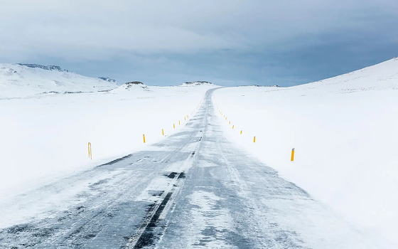
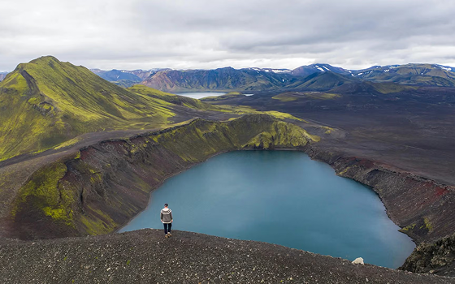
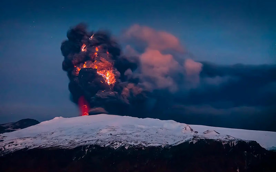
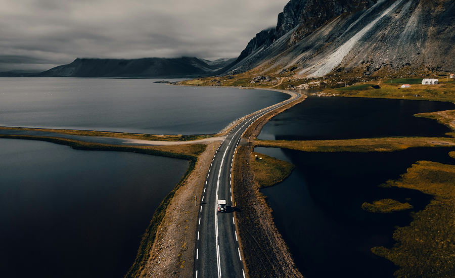
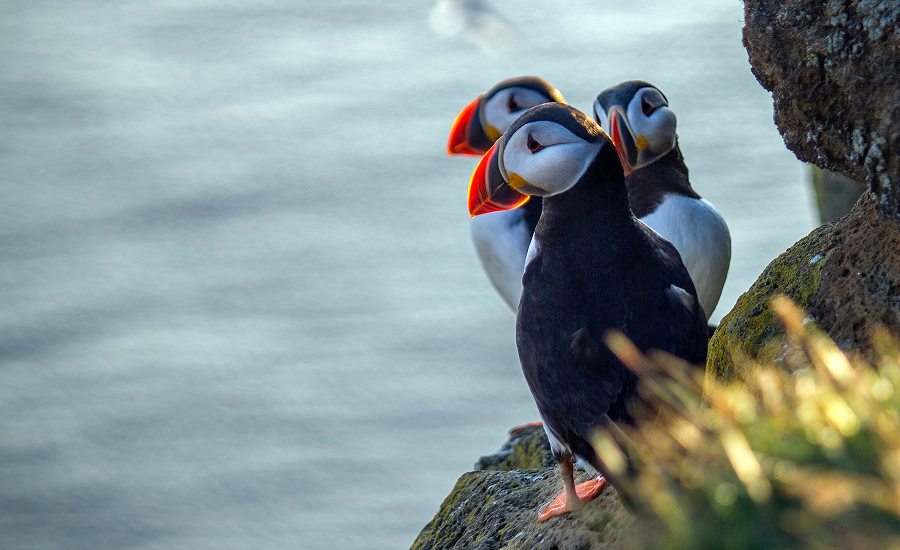
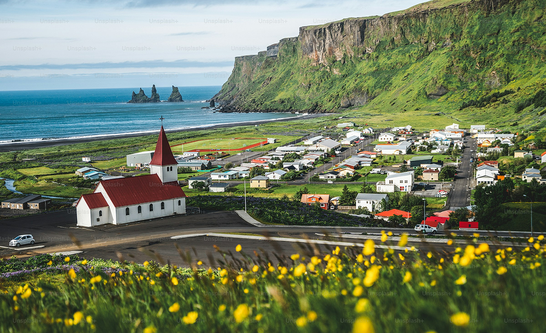
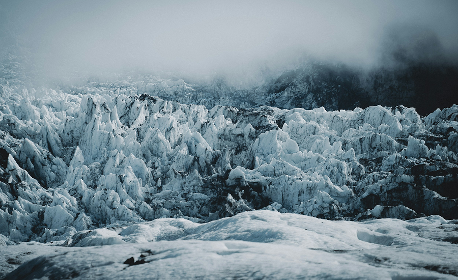
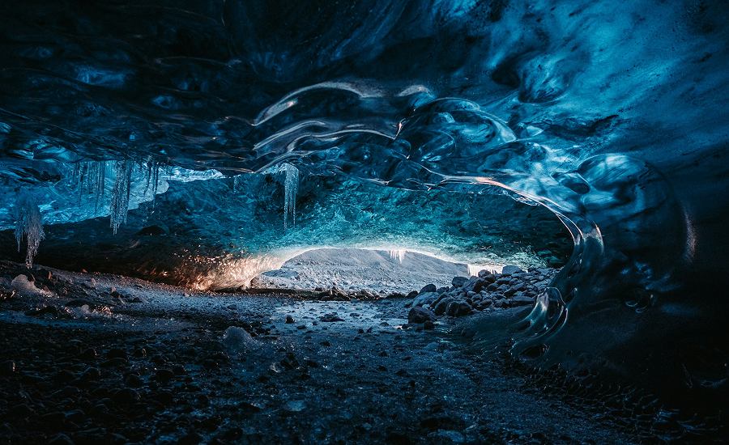

ABOUT
Volcanic Iceland: A New Eruptive Era
"Iceland is a land that constantly reshapes itself.
From the recent fires of Fagradalsfjall to the active fissures near Grindavík, you are witnessing a living planet in motion.
Molten earth meets ancient ice in an eternal dance of creation. Every fissure tells a story of a world still being born, inviting travelers to step beyond the ordinary and witness the raw, magnificent power of nature as it redefines the very edges of the map."



Why Iceland?
Iceland is a captivating destination where modern conveniences and untamed wilderness achieve a perfect harmony. Experience raw natural wonders found nowhere else on Earth.
Step away from your ordinary routine and embark on an unforgettable journey into the breathtaking landscapes crafted by nature.
-

- A Blend of Untamed Nature and Modern Comfort
- Experience Iceland's wild and untouched landscapes while enjoying exceptional modern conveniences, thoughtful services, and everything you need for a safe, relaxing, and comfortable journey.
- From breathtaking natural wonders to carefully curated experiences, every moment invites you to discover something extraordinary. Enjoy the perfect balance of adventure, comfort, and unforgettable memories throughout your stay.
-

- Access to Hidden, Inaccessible Wonders
- Explore secluded coastal areas reachable only by sea, including the puffin colonies of Heimaey and the UNESCO-listed island of Surtsey. Discover remote shorelines, dramatic volcanic landscapes, and diverse marine wildlife.
- Experience the rare opportunity to encounter Iceland's untouched coastal nature and witness remarkable sights that make every journey truly unforgettable. "Set sail on an extraordinary voyage to uncover the hidden masterpieces of the North Atlantic."
-

- Unforgettable Circumnavigation Voyages
- Sail around the island to discover Iceland’s iconic harbor towns and picturesque coastal villages. Visit Akureyri, the northern capital and gateway to the Diamond Circle, where breathtaking waterfalls and volcanic wonders await.
- Enjoy the charm of each port while experiencing the diverse beauty and culture of Iceland’s coastline. "Immerse yourself in the warm hospitality of historic fishing ports as you circumnavigate this land of fire and ice."
-

- Dramatic Landscapes: Glaciers, Fjords, and Lava Fields
-
Discover Iceland’s natural wonders—from the fjords of Seyðisfjörður and iconic Kirkjufell to the dramatic volcanic landscapes of Snæfellsjökull.
- Immerse yourself in the islands raw beauty and experience some of its most remarkable natural landmarks along the way. Uncover nature in its purest form, where majestic waterfalls and dramatic lava fields carve an unforgettable horizon.
-

- Tailored Adventure Options for Every Traveler
- Choose from a variety of travel experiences tailored to your style. Whether you prefer an active 4-day journey with hiking and boat excursions or a relaxing 10-day luxury cruise, discover Iceland in your own unforgettable way.
- Discover the perfect balance of adventure, relaxation, and exploration while experiencing the islands breathtaking landscapes at your own pace. Let the open road lead you to moments of quiet reflection and exhilarating discoveries.
How to Get to Iceland
Crossing oceans and skies to reach the land of fire and ice. Discover your ideal route to Iceland.
-
plane By Air · 15+ Hours
-
ferry By Sea · 5+ Days
-
cruise ship By Cruise · 10+ Days